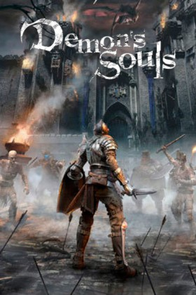
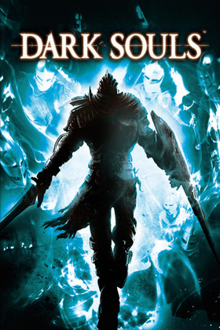
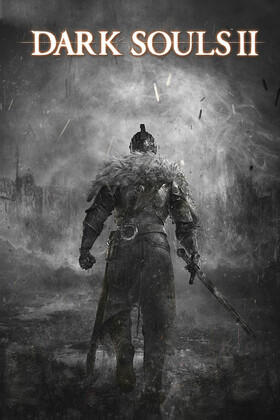
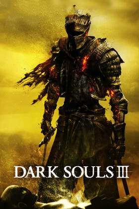

Videojuegos
Estos son a día de hoy todos los videojuegos de la saga Souls, comenzando por Demon´s Souls y acabando con Dark Souls III. De ellos se incluyen una pequeña reseña de la página web española especializada en videojuegos: 3DJuegos.
Demon's Souls

"Si hubiera que definir a Demon's Souls con una sola palabra esta sería "crudo". En primera instancia es áspero y duro, pero cuando paladeamos su sabor con más cuidado y calma descubrimos en él infinidad de matices que hacen que lo que al principio parecía vasto y desagradable rápidamente se convierta en algo maravilloso."
Dark Souls

"Dark Souls es diversión de la vieja escuela. Un RPG dificilísimo que propone unos retos tan enormes como la diversión
que nos deparará cumpliéndolos. Uno de los mejores y más impactantes videojuegos de rol de los últimos tiempos, que no
sólo logra superar a su predecesor con una propuesta mucho más pulida y mejorada sino que también sitúa en el mapa del
género a una saga que puede seguir dándonos incontables alegrías en el futuro."
Dark Souls II

"Dark Souls II imprime su propio sello siguiendo la estela que tanto ha gustado a los jugadores. El nuevo mapa es tanto o
más largo que el anterior, dejando momentos para el recuerdo y un nuevo motor que se agradece mucho en las nuevas
animaciones y efectos de iluminación. Si eres seguidor de la saga, tienes una nueva obra redonda que jugar y rejugar
hasta que el mundo vuelva a caer en la Oscuridad."
Dark Souls III

"Dark Souls III es el último esfuerzo de una fórmula refinada hasta el máximo posible. Uno de los juegos más trabajados e
importantes de lo que va de año, que marcará un antes y un después en la historia de un tipo de videojuego. Si eres
amante de la saga, no hace falta decir más. FromSoftware ha vuelto a crear una obra para el recuerdo, que no olvidaremos
ni siendo huecos."